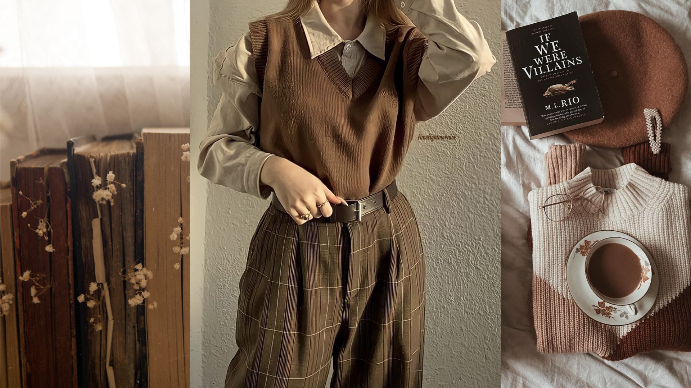
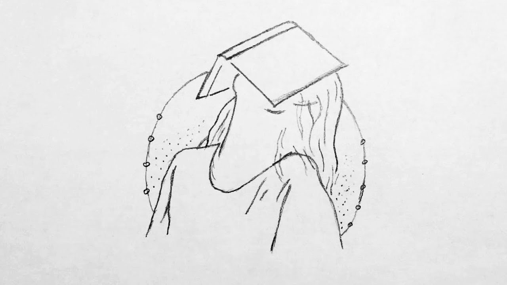
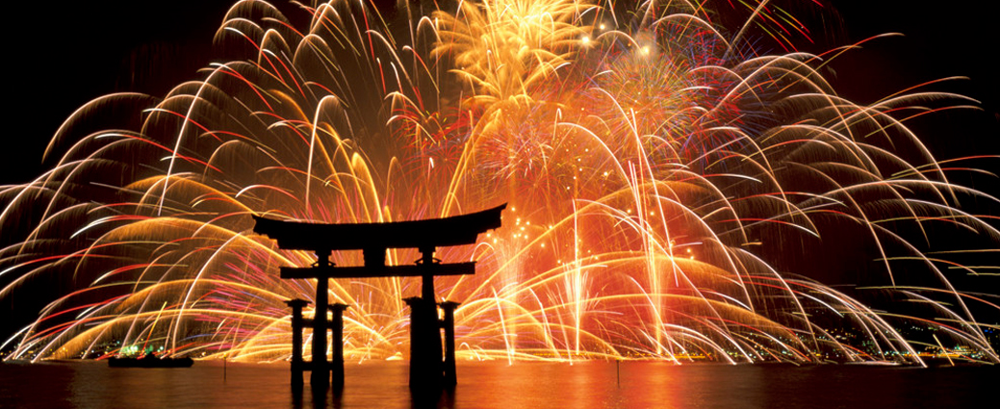
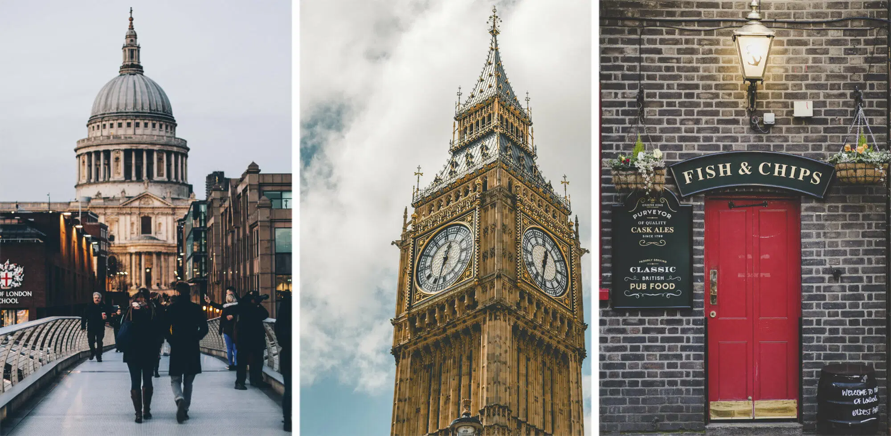
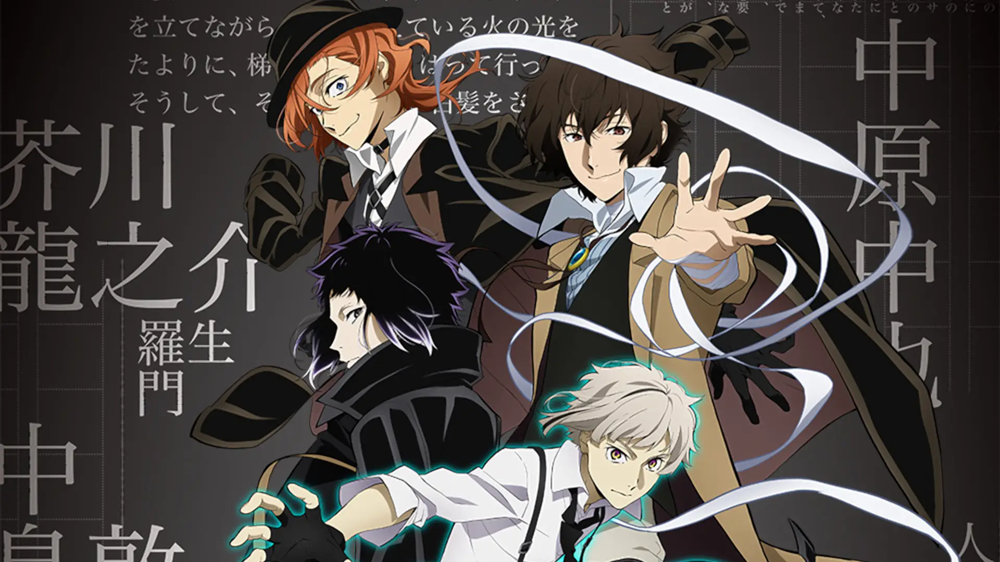
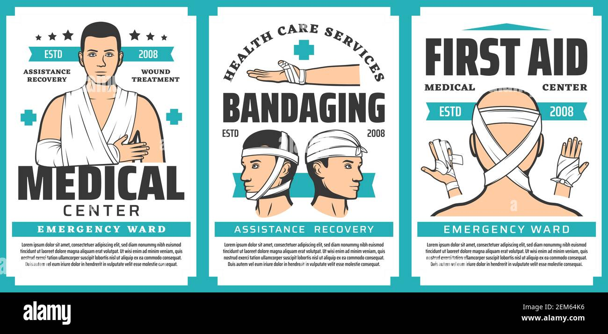
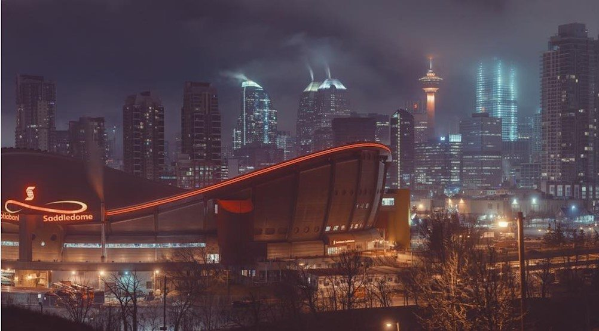
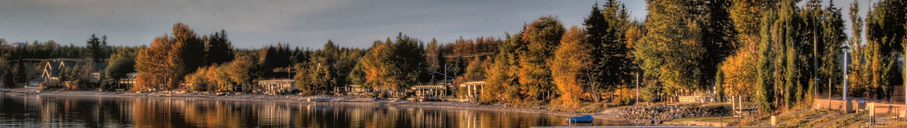

Some of my main hobbies include fashion / clothes styling and drawing. I enjoy fashion design mainly because it allows me to openly express myself and my personality to others who don't necissarily know me. I also just enjoy being able to pick and design outfits in general. I find it as a fun passtime. I also enjoy drawing for simular reasons. I find it is a easy way to express my current emotions, while also not having to necissarily share all my feeling with someone else. I view drawing somewhat like how others may view journaling.
 
The image on the left depicts a style/fashion that piques my intrest. I found the image to be fitting for a topic of clothing design. The image on the right is of a drawing portraying a person's emotions on a topic (books/homework). Considering that I use art to project my feelings/emotions, I felt this image was fitting.
I haven't visited any countires other than Japan and Canada for more than just a layover. Hence, some of my favorite travel destionations are in Japan. I would say that Miyajima has been my favorite place to visit. I made many long standing memories on my visit back in the summer of 2018. Me and my family went to watch the New Years fireworks festival. That was one of the most memorable things about my visit. I also enjoyed the view and food stalls. People were very cheerful due to it being New Years Eve, which adds onto the great memories. This is mainly why Miyajima is my favorite travel destination.

I chose this photo due to it's simularity to how the fireworks in 2018 looked. My Miyajima trip was a special moment for me. I felt it fit to include a photograph to help others picture this moment in time.
I would like to visit london, England. I've always liked the architecture in London, and still want to admire it in person. I would also like to see the fashion styles in London / the UK in general. I also like London's atmoshere as a "busy city".I grew up in the counrtyside, 50 minutes out from the city, so I think it's actually pretty cool to see many people and be in anenvironment like that.

I chose this photo as it showcases some places in London that I would want to visit if I travel there. This includes famous tourist acttracions, and restaurants.
A few of my favorite tv shows I've watched include Demon Slayer and Bungo Stray Dogs. I really enjoyed both shows due to the amount of character development, and attention to expressed emotions. All aspects of these shows were well thought out, and had a purpose. I enjoy any media or literature that can envoke strong feeling in the reader, and with well developed settings/character backstories.

These photos were chosen to give an idea as to what my favorite T.V. shows look like. As they are something that interests me, I feel that they are fitting to the theme of this website/blog.
I feel that many people influence me in some way. However, I feel like the person who has had the biggest positive impact on my life would be my mother. She has taught me how to take care of myself, and deal with life problems throughout my whole life. She has also taught me to treat everyone with respect, including myself. My mother has helped me learn about countless things, and how to use helpful life skills. She also supports me in my desicions, resulting in boosting my confindence. I feel that a lot of my personality and life views come from my mom.
My long term goal for my career is to become a specialized nurse. As of now, I am leaning towards more of an E.R. involved position, so am not fully sure what I will specialize in. I am planning on persuing medical as the department has always sparked intrest to me, along with my family history in the medical field. In order to achieve this goal, I will have to research the pre-requisite courses I will have to complete in highschool, and go from there.

This photo was chosen, as it was a photo that caught my eye, and is related to my long-term career goals. It depicts some jobs in the medical field that I find are realistic to dream of becoming.
I went to Calgary for a martial arts event. Me, my mother, and my father all drove down to go to my event. This isn't my first trip to Calgary, neither is it my first martial arts event. However, I am still filled with the same anticipation and excitement. I feel that we should always live in the moment, and look forward to what comes next. I find many people look back into their past and old experiences, missing out on oppertunities to make more in the moment. Although I have "already experienced" a trip like this one before, I want to keep my mind open for new memories. I made many more scrapbook worthy memories on this trip because of this view, and feel that others should also try looking at the world in different ways!

The vivid colours and contrasting sky help bring out my feeling of anticipation and expectation. I also like this photo, as I was in downtown Calgary, looking at the same view. This photo helps others visualize the moment I tried to capture in writing.
As usual, I went out to my mom and dad's house out by Pigeon lake on the weekend. Located around 50 or so minutes away from Edmonton, their house is very isolated and quiet. Perhaps for someone who is always bustling with restlessness or just a social butterfly, this would seem kind of lonesome. For me, I take this time to recuperate, and "charge myself up" for another eventful week ahead. Another one of my pass times is photography. When out in, quite frankly, the middle of nowhere, the scenery is gentle and reserved. This makes for easy shots of sun rise/ sun sets. If I'm lucky, I can also capture the rare photo of an wild animal like a moose or buck. I find that being out in the countryside also helps me de-stress and unwind any strong emotions I may have kept bottled up.

Pigeon lake is captured in this photo. I felt that this specific photo helps to bring out my emphasism on the calm, worry-free environment I am surrounded by.
I use this website a lot for fashion trends, and art reference. I find it very useful, and easy to navigate.
This website allows aspiring authors to publish their original works, fandom interperatations, and such to the public free of charge. It is a great website for you people and students to use.
This website contains many tutorials for multiple computer programming languages, and is a very useful to use on an everyday basis. It is especially useful to reference during my computer science classes.
This image is the logo for Archive Of Our Own (Ao3). I included this image as I find that Ao3 is a very brilliant website that allows authors to freely be able to gain reach for their works. I think Ao3 is a very well thought out website.